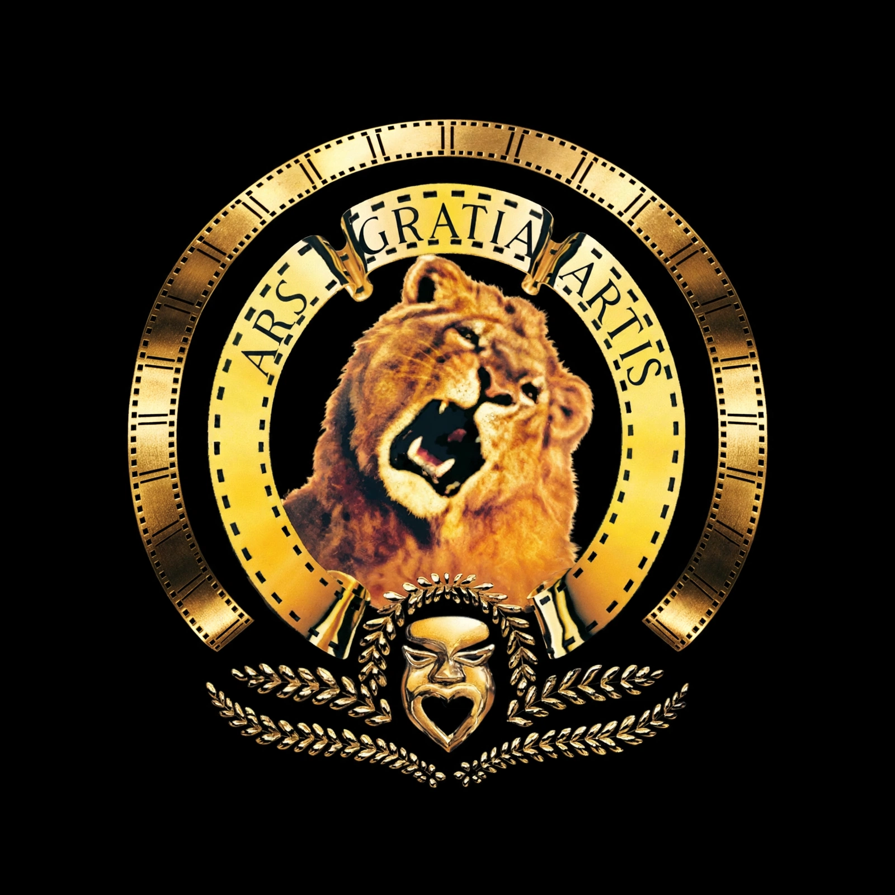

| Metro-Goldwyn-Mayer | |
|---|---|
| Industry | Film, television |
| Founded | 17 April 1924 |
| Founders | Marcus Loew, Louis B. Mayer, Nicholas Schenck |
| Headquarters | Beverly Hills, California, U.S. |
| Parent | Amazon MGM Studios (Amazon) |
| Motto | Ars Gratia Artis ("Art for Art's Sake") |
Metro-Goldwyn-Mayer Studios Inc. (also known as Metro-Goldwyn-Mayer Pictures, commonly shortened to MGM) is an American film and television production and distribution company founded on April 17, 1924, and based in Beverly Hills, California. It was formed by Marcus Loew through the merger of Metro Pictures, Goldwyn Pictures, and Louis B. Mayer Pictures.
Under studio head Louis B. Mayer and production chief Irving Thalberg, MGM became the most prestigious studio of Hollywood's golden age, boasting "more stars than there are in heaven" — including Greta Garbo, Clark Gable, Judy Garland, and Spencer Tracy. Its celebrated productions included Ben-Hur (1925 and 1959), Grand Hotel (1932), The Wizard of Oz and Gone with the Wind (both 1939), and a famous series of movie musicals. MGM was a core member of the "Big Five" majors of the studio system.
After antitrust divestiture and Mayer's departure in 1951, the studio declined through successive owners, including Kirk Kerkorian. MGM/UA was formed in 1981 after the purchase of United Artists. The studio filed for bankruptcy in 2010 and emerged under new ownership. Amazon acquired MGM in March 2022 for $8.45 billion, folding it into Amazon MGM Studios. Its library includes the James Bond and Rocky/Creed franchises.
MGM's logo features Leo the Lion inside a film ribbon inscribed with the Latin motto Ars Gratia Artis. Several lions have played the role since the Goldwyn Pictures era; the current lion footage dates from 1957.
Paramount Pictures · Classical Hollywood cinema · Cinema of the United States